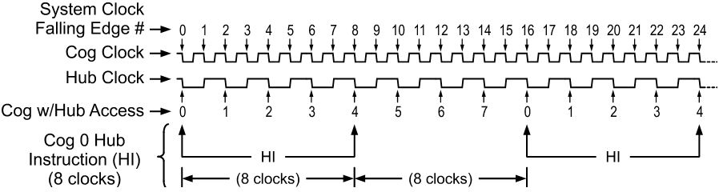
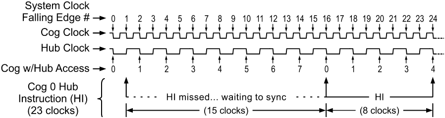

To maintain system integrity, mutually exclusive resources must not be accessed by more than one cog at a time. The Hub maintains this integrity by controlling access to mutually exclusive resources, giving each cog a turn to access them in a “round robin” fashion from Cog 0 through Cog 7 and back to Cog 0 again. The Hub, and the bus it controls, runs at half the System Clock rate. This means that the Hub gives a cog access to mutually exclusive resources once every 16 System Clock cycles. Hub instructions, the Propeller Assembly instructions that access mutually exclusive Shared Resources, require 8 cycles to execute but they first need to be synchronized to the start of the hub access window. It takes up to 15 cycles (16 minus 1, if we just missed it) to synchronize to the hub access window plus 8 cycles to execute the hub instruction, so hub instructions take from 8 to 23 cycles to complete.
The diagrams below show examples where Cog 0 has a hub instruction to execute. The top diagram shows the best-case scenario; the hub instruction was ready right at the start of that cog’s access window. The hub instruction executes immediately (8 cycles) leaving an additional 8 cycles for other instructions before the next hub access window arrives.

Cog-Hub Interaction – Best Case Scenario
In the worst-case scenario below, the hub instruction was ready on the cycle right after the start of Cog 0’s access window - it just barely missed it. The cog waits until the next hub access window (15 cycles later) then the hub instruction executes (8 cycles) for a total of 23 cycles for that hub instruction. Again, there are 8 additional cycles after the hub instruction for other instructions to execute before the next hub access window arrives.

Cog-Hub Interaction – Worst Case Scenario
To get the most efficiency out of Propeller Assembly routines that have to frequently access mutually exclusive resources, it can be beneficial to interleave non-hub instructions with hub instructions to lessen the number of cycles waiting for the next hub access window. Since most Propeller Assembly instructions take 4 clock cycles, two such instructions can be executed in between otherwise contiguous hub instructions.
Keep in mind that a particular cog’s hub instructions do not, in any way, interfere with other cogs’ instructions because of the Hub mechanism. Cog 1, for example, may start a hub instruction during System Clock cycle 2, in both of these examples, possibly overlapping its execution with that of Cog 0 without any ill effects. Meanwhile, all other cogs can continue executing non-hub instructions, or awaiting their individual hub access windows regardless of what the others are doing.
Propeller Help Version 1.2
Copyright © Parallax Inc., dba Parallax Semiconductor
6/17/2011